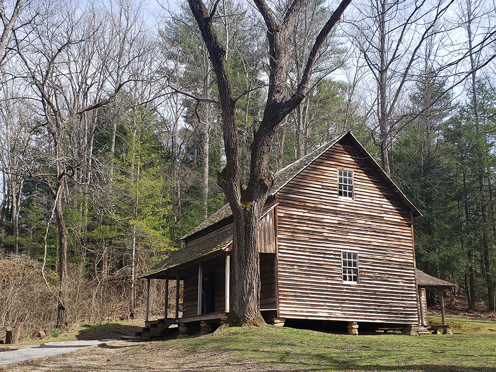
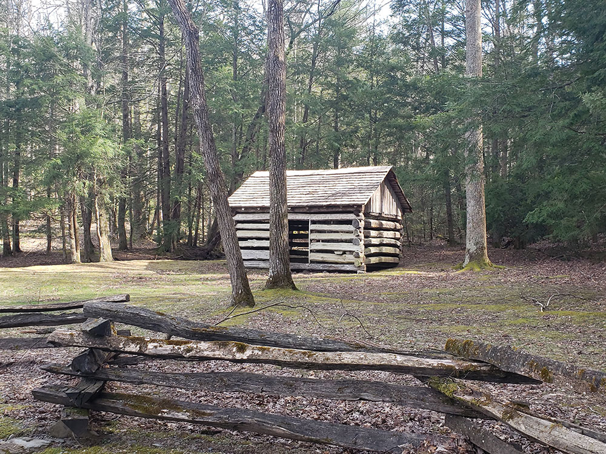
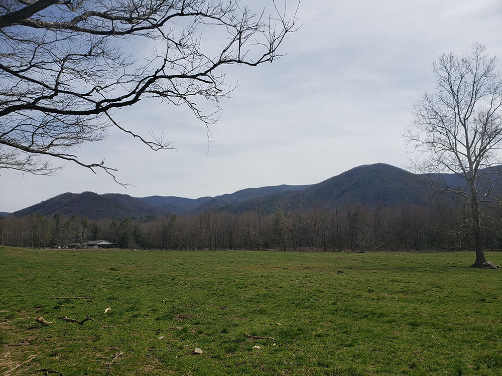

Single most popular destination for visitors to the park, attracting visitors for its well preserved homesteads, scenic mountain views, and abundant display of wildlife
General Information
Vehicle-free days on Wednesdays (typically May through September)
Allow at least 2 to 4 hours to tour the loop road
Great Smoky Mountains National Park parking tags may be required for vehicles parked longer than 15 minutes
How to Get There
From Townsend, TN (9 mi): Take TN-73 E (Laurel Creek Road) from Townsend and follow it south through Great Smoky Mountains National Park to the entrance of Cades Cove Loop Road.
Overview
Cades Cove is an isolated valley located in the Tennessee section of the Great Smoky Mountains National Park. The valley was home to numerous settlers before the formation of the national park. Today Cades Cove, the single most popular destination for visitors to the park, attracting visitors because of its well preserved homesteads, scenic mountain views, and abundant display of wildlife. The Cades Cove Historic District is listed on the National Register of Historic Places.
Geologically, Cades Cove is a type of valley known as a "limestone window", created by erosion that removed the older Precambrian sandstone, exposing the younger Paleozoic limestone beneath. More weathering-resistant formations, such as the Cades sandstone which underlies Rich Mountain to the north and the Elkmont and Thunderhead sandstones which form the Smokies crest to the south surround the cove, leaving it relatively isolated within the Smokies. As with neighboring limestone windows such as Tuckaleechee to the north and Wear Cove to the east, the weathering of the limestone produced deep, fertile soil, making Cades Cove attractive to early farmers.
The majority of the rocks that make up Cades Cove are unaltered sedimentary rocks formed between 340 million and 570 million years ago during the Ordovician Period. The Precambrian rocks that comprise the high ridges surrounding the cove are Ocoee Supergroup sandstones, formed approximately one billion years ago. The mountains themselves were formed between 200 million and 400 million years ago during the Appalachian orogeny, when the North American and African plates collided, thrusting the older rock formations over the younger formations.
Cades Cove has been listed on the National Register of Historic Places as an historic district since July 13, 1977. The historic district is bounded by the 2,000-foot (610 m) elevation contour (that is, it comprises all areas below that elevation) and includes both historic buildings and prehistoric archaeological sites.
The National Park Service currently maintains several buildings in Cades Cove that are representative of pioneer life in the 19th-century Appalachia. By the time the cove was incorporated into the park, most residents lived in relatively modern frame houses, rather than the log cabins that predominate among the buildings preserved in the cove.
The following are listed in the order they are approached along the Cades Cove Loop Road:
- The John Oliver Cabin, constructed c. 1822-1823 by the cove's first permanent European settlers. Dunn reports that the Olivers spent the winter of 1818–1819 in an abandoned Cherokee hut, and built a crude structure the following year. The Oliver cabin was built as a replacement for this first crude structure, which was located a few yards behind the cabin.
- The Primitive Baptist Church, constructed in 1827. The church was organized as the Cades Cove Baptist Church in 1827, and renamed "Primitive Baptist" after the Anti-missions Split in 1841. The Olivers and Russell Gregory are buried in its cemetery.
- The Cades Cove Methodist Church, constructed in 1902. Methodists were active in the cove as early as the 1820s, and built their first meeting house in 1840.
- The Cades Cove Missionary Baptist Church, current building constructed in 1915–1916. The church was formed from a small faction of Cades Cove Baptists in 1839 who had broken off from the main church due to the debate over missions, which the Cades Cove Baptists didn't consider authorized by scripture.
- The Myers Barn, constructed in 1920. The Myers Barn is a more modern-looking hay barn located along the trail to the Elijah Oliver Place.
- The Elijah Oliver Place, constructed in 1866. Elijah Oliver (1829–1905) was the son of John and Lucretia Oliver. His original farm was destroyed during the U.S. Civil War by Confederate marauders. The homestead includes a dog-trot cabin, a chicken coop, a corn crib, a spring house, and a crude stable.
- The John Cable Grist Mill, constructed in 1868. John P. Cable (1819–1891), a nephew of Peter Cable, had to construct a series of elaborate diversions along Mill Creek and Forge Creek to get enough water power for the mill's characteristic overshot wheel.
- The Becky Cable House, constructed in 1879. This building, adjacent to the Cable Mill, was initially used by Leason Gregg as a general store. In 1887, he sold it to John Cable's spinster daughter, Rebecca Cable (1844–1940). A Cable family tradition says that Rebecca never forgave her father and refused to marry after her father broke off one of her childhood romances. Various buildings have been moved from elsewhere in the cove and placed near the Cable mill, including a barn, a carriage house, a chicken coop, a molasses still, a sorghum press, and a replica of a blacksmith shop.
- The Henry Whitehead Cabin, constructed 1895–1896. This cabin, located on Forge Creek Road near Chestnut Flats, was built by Matilda "Aunt Tildy" Shields and her second husband, Henry Whitehead (1851–1914). Shields' sons from her first marriage were prominent figures in the cove's moonshine trade.
- The Dan Lawson Place, built by Peter Cable in the 1840s and acquired by Dan Lawson (1827–1905) after he married Cable's daughter, Mary Jane. Lawson was the cove's wealthiest resident. The homestead includes a cabin (still called the Peter Cable cabin), a smokehouse, a chicken coop, and a hay barn.
- The Tipton Place, built in the 1880s by the descendants of Revolutionary War veteran William "Fighting Billy" Tipton. The paneling on the house was a later addition. Along with the cabin, the homestead includes a carriage house, a smokehouse, a woodshed, and the oft-photographed double-cantilever barn.
- The Carter Shields Cabin, a rustic log cabin built in the 1880s.
Though geographically isolated, Cades Cove today is a popular tourist destination in the Great Smoky Mountains National Park. A one-way, eleven miles (18 km) paved loop around Cades Cove draws visitors daily. The eleven miles may take more than four hours to traverse and view the sites during tourist season.
The cove draws attention for numerous black bear sightings, although many enthusiasts make the trip for the abundant hiking access and the well-preserved 19th-century homesteads. On most days, multiple deer can be seen in the meadows and woods throughout the cove. Popular hiking trails within the cove include the trails to Abrams Falls (a nearly five-mile round trip hike) and Gregory Bald, the latter named after Russell Gregory, a prominent resident of the cove. In addition to hiking and general sightseeing, horseback (see below) and bicycle riding are popular activities.
This article uses material from the Wikipedia article "Cades Cove", which is released under the Creative Commons Attribution-Share-Alike License 3.0


